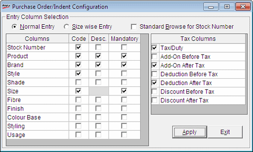

This option is used to configure the data entry columns for Purchase Order generation. You can select the data entry mode, columns to be entered, mandatory columns and tax types. Once you configure the columns to be entered, you may sort the order of appearance of these columns while generating a Purchase Order.
Note: This configuration can be modified during Purchase Order generation if the system parameter Allow PO/Indent Configuration under the category Purchase Order is enabled. Otherwise, only sorting of columns is permitted.
How to reach: Stock > Purchase Order > Purchase Order Configuration
The Purchase Order/Indent Configuration window is displayed.

Normal Entry: Click to generate purchase order based on Class1, Class2, SubClass1, SubClass2, Size, ItemAnalysis code or a combination of any of these attributes.
Size wise Entry: Click to generate purchase order based on size. Class1, Class2 and Size are selected by default and you cannot change this.
Standard Browse for Stock Number: Choose to open the Advanced Item Search window instead of Browse - Stock Number window on pressing F2 while generating a purchase order. Advanced Item Search window allows specification of item selection criteria based on multiple attributes whereas Browse - Stock Number window allows item selection only based on code and description.
Columns: Displays the list of attributes for which the values can be provided while preparing a PO.
Code: Select the attributes for which the code will be provided while preparing a PO. All the selected columns will appear enabled during PO generation. However, it is not mandatory to enter data for all the columns.
Desc.: Select the attributes for which the description will be displayed while preparing a PO. All the selected columns will appear grayed in the grid.
Mandatory: Select the subset of chosen attributes that are mandatory for preparing a PO.
Note: If you have selected the option Size wise Entry, then Class1, Class2 and Size are deactivated. Also, the Stock Number cannot be selected.
Tax Columns: Select the appropriate taxation parameters from the list. The values selected will be considered for tax computation, depending on whether it is before tax or after tax.